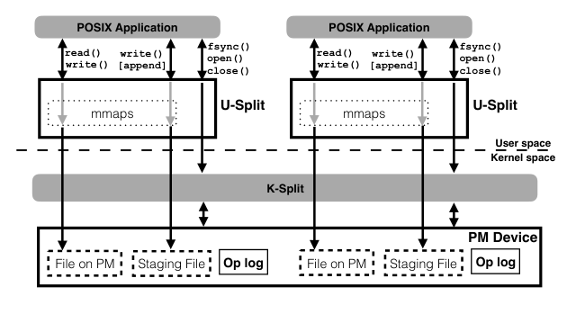
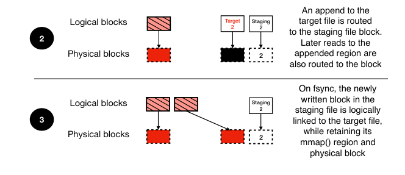
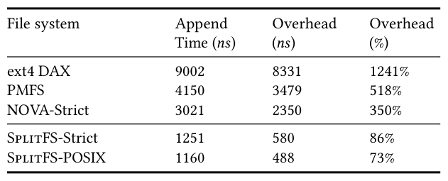
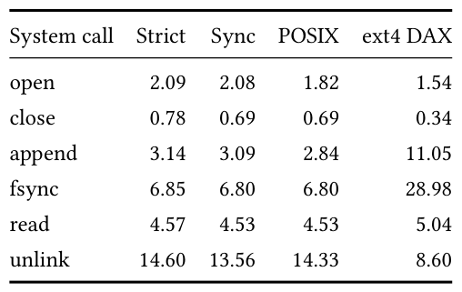
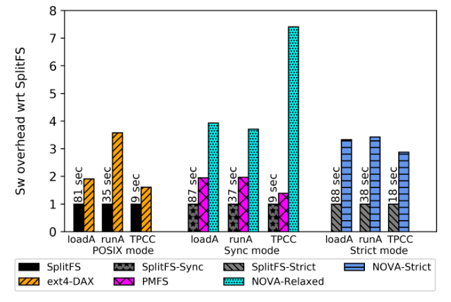
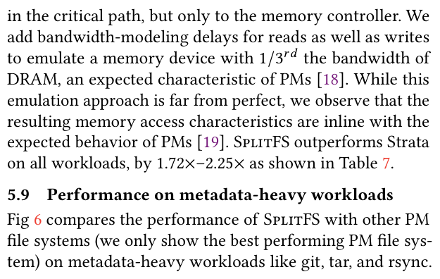

SplitFS: Reducing Software Overhead in File Systems for Persistent Memory
This page was written by an AI model to give a high-level overview of the paper. Please check the paper for detail: ACM Digital Library.
Persistent memory (PM) sits on the memory bus next to DRAM and is read and written with ordinary processor loads and stores. Its raw performance is close to DRAM's: random reads are only 2 to 3.7x slower, and a store plus flush plus fence is only 5% slower than the DRAM equivalent, though read and write bandwidth are a third and a sixth of DRAM's (Table 2). That speed should make PM-backed file I/O nearly free in software terms. In practice it is not: writing a 4 KB block to PM itself takes 671 ns, yet ext4 DAX takes 9002 ns to perform a 4 KB append overall, a 1241% software overhead; PMFS adds 518%, and NOVA, an in-kernel file system built specifically for PM with strong guarantees, still adds 350% (Table 1).
In-kernel PM file systems such as PMFS, BPFS, and NOVA cut overhead by rewriting file-system internals from scratch, but every operation, even a small overwrite, still traps into the kernel and runs through logging or journaling code. User-space alternatives try to avoid the trap but pay other costs: Aerie keeps the kernel for only coarse-grained allocation and hands out leases from a user-space metadata server, while Strata puts the whole file system in user space, writing all data first to a private per-process log and later copying it into a shared area, which doubles PM writes for append-heavy workloads.
SplitFS's idea is a different split of responsibilities. A user-space library file system handles every data operation (reads, overwrites, appends) directly in the application's address space using memory-mapped loads and stores. Every metadata operation (open, close, fsync, rename) is routed, unchanged in semantics, to an existing and mature kernel file system, ext4 DAX, which SplitFS patches with only one new system call. The bet: data operations vastly outnumber metadata operations in most workloads, so accelerating them pays off even though metadata operations themselves get slightly slower.
Mechanically, reads and overwrites are served by memory-mapping the surrounding 2 MB of the file and using memcpy or non-temporal stores on it, with no kernel trap. Appends, and overwrites in the strongest mode, are redirected into a pre-allocated staging file instead of the target file. On fsync(), a new primitive called relink atomically moves the written extents from the staging file into the target file by swapping block pointers through an ext4 ioctl wrapped in ext4's own journal transaction, so no data is physically copied. A compact operation log, writing one 64-byte cache line and issuing one memory fence per operation in the common case, gives SplitFS atomicity for data operations without NOVA's heavier per-inode persistent log.
On a two-socket Intel Optane DC Persistent Memory machine, SplitFS cuts software overhead on 4 KB appends by up to 4x compared to NOVA and 17x compared to ext4 DAX (Table 1). On real applications, LevelDB (YCSB), Redis, and SQLite (TPC-C) see up to 2x higher throughput than ext4 DAX and NOVA at matching consistency guarantees, while metadata-heavy utilities (git, tar, rsync), which the split cannot accelerate, slow down by at most 13%.

Key takeaways
- Appending 4 KB to PM takes 671 ns of raw write time, but ext4 DAX takes 9002 ns overall (1241% overhead) and NOVA-Strict takes 3021 ns (350% overhead); software, not the media, is the bottleneck.
- SplitFS splits work between U-Split, a user-space library that serves reads and overwrites as loads and stores on a memory-mapped file, and K-Split, the unmodified ext4 DAX kernel file system, which handles all metadata.
- The relink primitive logically moves PM extents between a staging file and the target file through an ext4 ioctl and journal transaction, giving atomic appends and overwrites without copying data.
- Three consistency modes (POSIX, sync, strict) match the guarantees of ext4 DAX, PMFS/NOVA-Relaxed, and NOVA-Strict/Strata respectively, and different applications can run in different modes at once without interfering.
- Results: up to 4x lower software overhead than NOVA and 17x lower than ext4 DAX; up to 2x higher throughput than ext4 DAX and NOVA on YCSB, Redis, and TPC-C; at most 13% slower on metadata-heavy utilities like git, tar, and rsync.
From POSIX calls to loads, stores, and relink
PM and DAX background, where the overhead comes from, the split architecture, consistency modes, staging and relink, logging, and implementation.
1 · Persistent memory and the DAX/mmap interface
PM offers 8-byte atomic stores that become persistent as soon as they reach the PM controller. An application can make a store durable in one of two ways: a non-temporal store instruction (movnt on x86) that bypasses the cache hierarchy and writes straight to the PM controller, or a regular store followed by a cache-line flush instruction (clflush or clwb) and a memory fence. Intel DC Persistent Memory, the first commercially available PM, exhibits the performance profile in Table 2; PM is also expected to have limited write endurance, around 107 write cycles.
| Property | DRAM | Intel PM (ratio) |
|---|---|---|
| Sequential read latency (ns) | 81 | 169 (2.08x) |
| Random read latency (ns) | 81 | 305 (3.76x) |
| Store + flush + fence (ns) | 86 | 91 (1.05x) |
| Read bandwidth (GB/s) | 120 | 39.4 (0.33x) |
| Write bandwidth (GB/s) | 80 | 13.9 (0.17x) |
Linux's Direct Access (DAX) mode lets ext4 map file extents directly onto PM physical addresses. Once mmap() establishes this mapping, a store to the mapped virtual address translates straight into a store at the corresponding PM byte, with no page cache and no file-system code on the access path. DAX and mmap() alone give fast access but no naming, no atomicity, and no crash-consistency guarantees; applications still need a file system on top.
2 · Where the software overhead comes from
The paper defines software overhead as the time spent servicing a file-system call minus the time actually spent reading or writing PM. For a 4 KB append, raw PM write time is 671 ns, but ext4 DAX, PMFS, and NOVA-Strict spend thousands of additional nanoseconds on allocation, logging, and updating multiple metadata structures before and after the actual write (full numbers are in Table 1 of the Evaluation tab). The more metadata items a file system must update per operation, the higher its overhead, regardless of how fast the underlying memory is.
3 · The split architecture: U-Split and K-Split
SplitFS has two components, shown together with the data and metadata paths they each handle below. U-Split is a user-space library, linked into the application, that intercepts POSIX calls and services all data operations (read(), write(), overwrites, appends) directly. K-Split is the existing ext4 DAX kernel file system, which U-Split calls into for every metadata operation (open(), close(), fsync(), rename(), unlink()). This mirrors the Exokernel philosophy of separating a thin, trusted control path from an application-managed data path, but unlike Aerie's coarse-grained kernel allocator, K-Split handles metadata operations at their normal granularity, and unlike Strata, SplitFS never re-implements VFS functionality in user space.
| Technique | Benefit |
|---|---|
| Split architecture | Low-overhead data operations, correct metadata operations |
| Collection of memory-mmaps | Low-overhead data operations in the presence of updates and appends |
| Relink + staging | Optimized appends, atomic data operations, low write amplification |
| Optimized operation logging | Atomic operations, low write amplification |
4 · Three consistency modes
SplitFS exposes three modes that an application chooses per U-Split instance; concurrent applications on the same machine can run in different modes without interfering with each other. Appends are atomic in all three modes.
| Mode | Sync. data ops | Atomic data ops | Sync. metadata ops | Atomic metadata ops | Equivalent to |
|---|---|---|---|---|---|
| POSIX | no | no | no | yes | ext4-DAX |
| sync | yes | no | yes | yes | NOVA-Relaxed, PMFS |
| strict | yes | yes | yes | yes | NOVA-Strict, Strata |
Apart from appends (visible only after fsync()), every SplitFS operation is immediately visible to other processes in all three modes, which is why SplitFS needs no leasing scheme like Aerie's to coordinate concurrent access.
5 · Serving reads and overwrites in user space
- On the first access to a region of a file, U-Split memory-maps the surrounding 2 MB and adds it to a per-file collection of mmaps, since one logical file's data can be spread across the original file and one or more staging files.
- A read consults the collection of mmaps to find the mapping holding the most recent data for the requested offset, then services the read with a processor load (memcpy).
- An overwrite to an already-mapped offset is serviced with non-temporal stores directly on the mapping; in strict mode, overwrites are instead redirected to a staging file to preserve atomicity (step 6).
6 · Appends and atomic data operations: staging files and relink

SplitFS pre-allocates ten 160 MB staging files at startup; a background thread creates a new one whenever one fills up, keeping allocation off the critical path. Every append, and every overwrite in strict mode, is first written into pre-allocated blocks of a staging file using non-temporal stores, exactly like an ordinary overwrite.
- On fsync() (or close()), SplitFS calls relink(file1, offset1, file2, offset2, size), which atomically moves the data at offset1 of the staging file (file1) to offset2 of the target file (file2).
- Relink is built on ext4 DAX's EXT4_IOC_MOVE_EXT ioctl, which swaps block pointers between the two files and de-allocates any blocks it replaces in the target; SplitFS wraps this in an ext4 journal transaction so the swap is atomic across a crash.
- When offset1 or offset2 falls in the middle of a block, SplitFS copies only that partial block's data and performs a metadata-only relink for the rest; block-aligned appends and overwrites, the common POSIX case, involve no data copy at all.
- Existing memory mappings of both files remain valid after the swap, so later reads and writes to the just-relinked region avoid a page fault.
7 · Optimized logging for strict mode
In strict mode, SplitFS additionally guarantees every operation is atomic, which it achieves with a per-U-Split-instance operation log, pre-allocated, memory-mapped, and written with non-temporal stores.
- Log entries record intent logically: for example, a write's log entry is a pointer into the staging file where the written data lives, not the data itself.
- In the common case, one operation produces exactly one 64-byte log entry (one cache line) and one sfence; a 4-byte transactional checksum inside the entry lets recovery distinguish valid entries from torn ones, cutting the fences needed per entry from two to one.
- The log's tail is tracked only in DRAM; concurrent threads advance it with compare-and-swap and write their own entries concurrently, since the tail itself is not needed for crash recovery.
- The log file is zeroed at initialization, so recovery treats any non-zero, 64-byte-aligned entry as potentially valid, checks its checksum, and replays the valid ones; replay is idempotent, so repeating it after another crash is safe.
- The log defaults to 128 MB, enough for 2M single-cache-line operations; once full, SplitFS checkpoints by calling relink() on every open file with staged data, then zeroes and reuses the log.
Because validity is checked with checksums rather than a persistent tail pointer, SplitFS avoids NOVA's practice of updating a per-inode log tail on PM with its own flush and fence on every operation.
8 · Implementation
SplitFS is roughly 9,000 lines of C for the user-space library plus a 500-line patch to ext4 DAX adding the relink system call, built against Linux kernel 4.13. U-Split intercepts 35 common POSIX calls (pwrite(), pread64(), fread(), readv(), ftruncate64(), openat(), and others) via LD_PRELOAD at the glibc level. fork() works naturally because U-Split's state is copied along with the rest of the address space; execve(), which replaces the address space but must leave open file descriptors working, is handled by having SplitFS write its open-file state to a shared-memory file keyed by process ID before the call and reload it afterward; dup() is handled by having duplicated descriptors share a single offset pointer so updates from either descriptor are visible to both. Tunable parameters include the mmap() size used for reads and overwrites (2 MB default, 2 MB to 512 MB range, chosen to enable huge pages), the number of staging files pre-allocated at startup (10 by default), and the operation log size (128 MB by default). Measured performance appears in the Evaluation tab.
9 · Lessons from building SplitFS
- Page faults are costly at PM latency. SplitFS uses MAP_POPULATE to pre-fault mappings, since the device latency that normally hides page-fault cost on disk or SSD-backed storage is absent on PM.
- Huge pages are fragile. A 2 MB huge-page mapping needs both the virtual address and the underlying PM physical address to be 2 MB aligned; after a few thousand file creations and deletions fragment PM, new huge pages often become impossible to create. SplitFS sidesteps this by creating huge-page mappings early in a workload and reusing them through its collection of mmaps; without huge pages, read performance dropped by 50% in many of the paper's workloads.
- Keep the critical path empty. Pre-allocating staging files, pre-faulting mappings, and caching mappings across operations are all ways SplitFS moves work off the data-path; even its logging protocol trades a longer recovery time for a simpler, lower-overhead critical path.
- DRAM staging was tried and dropped. The authors also tried staging appends in DRAM instead of PM; since PM and DRAM performance are similar, the cost of copying data from DRAM to PM at fsync() outweighed any benefit of DRAM buffering.
- Legacy applications limit further gains. LevelDB spends 60 to 80% of its time in POSIX calls on current PM file systems; SplitFS lowers that to 46 to 50%, but further software-overhead reduction has diminishing returns once application code dominates. The paper argues applications would need to be rewritten against PM-native libraries like libpmem to go further.
Evaluation
What the paper measures, its key tables and figures in the paper's order, and what each one tells us.
SplitFS is compared against ext4 DAX, PMFS, and NOVA (in Relaxed and Strict configurations) on real Intel Optane DC Persistent Memory, mode for mode wherever a baseline offers matching guarantees. Strata could not be run reliably on the real hardware, so it is compared on a smaller-scale, DRAM-based PM emulation instead. Every experiment was repeated multiple times with standard deviation under 5% of the mean.
| What | Value in the paper |
|---|---|
| Platform | 2-socket, 96-core machine; 768 GB Optane PMM; 375 GB DRAM; 32 MB last-level cache; Linux 4.13 (Ubuntu 16.04) |
| Strata-only emulation | DRAM-backed PM emulation: 220 ns delay per read() call, bandwidth throttled to roughly 1/3 of DRAM |
| Workloads | TPC-C on SQLite (OLTP, write-ahead-logging mode); YCSB on LevelDB (six read/write mixes, 64 MB sstables); Redis SET (1M keys, append-only-file mode, fsync every second); git add/commit on the Linux kernel tree (x10); tar compressing the Linux kernel plus a 7 GB/1200-file backup-like dataset; rsync copying the same dataset; microbenchmarks for syscall latency and 4 KB sequential/random read/write/append over a 128 MB file |
| Baselines | ext4 DAX (POSIX-equivalent); PMFS and NOVA-Relaxed (sync-equivalent); NOVA-Strict and Strata (strict-equivalent) |
| Metrics | per-syscall latency (us); software overhead (ns and % over raw PM access time); application throughput (Kops/s) or latency (s); DRAM/CPU resource usage |
Appending a 4 KB block to PM costs far more in software than in hardware

What it shows. For a single 4 KB append (671 ns of that is the raw PM write), the table lists each file system's total append time, the software overhead in nanoseconds, and that overhead as a percentage. ext4 DAX: 9002 ns total, 8331 ns overhead, 1241%. PMFS: 4150 ns, 3479 ns, 518%. NOVA-Strict: 3021 ns, 2350 ns, 350%. SplitFS-Strict: 1251 ns, 580 ns, 86%. SplitFS-POSIX: 1160 ns, 488 ns, 73%.
What to take from it. SplitFS's strongest guarantee mode (strict, 86% overhead) already beats NOVA's comparable guarantee (NOVA-Strict, 350%), and SplitFS-POSIX's 73% is 17x lower than ext4 DAX's 1241%, even though SplitFS is built on top of ext4 DAX for every metadata operation. This is a single isolated operation under idealized conditions, meant to motivate the paper, not a full application benchmark.
User-space data operations get much faster; user-space bookkeeping makes metadata operations somewhat slower

What it shows. Using a FileBench-Varmail-like microbenchmark (create and append 16 KB in four appends with fsync()s, close, reopen, read, close/reopen, delete), the table reports latency in microseconds for open, close, append, fsync, read, and unlink, for SplitFS's strict, sync, and POSIX modes and for ext4 DAX. Append: ext4 DAX 11.05 us versus SplitFS 2.84 to 3.14 us. Fsync: ext4 DAX 28.98 us versus SplitFS 6.80 to 6.85 us. Open: ext4 DAX 1.54 us versus SplitFS 1.82 to 2.09 us. Close: ext4 DAX 0.34 us versus SplitFS 0.69 to 0.78 us. Unlink: ext4 DAX 8.60 us versus SplitFS 13.56 to 14.60 us. Read: ext4 DAX 5.04 us versus SplitFS 4.53 to 4.57 us.
What to take from it. SplitFS accelerates the operations it services in user space, append and fsync are 3 to 4x faster, while metadata operations like open, close, and especially unlink (which must tear down U-Split's cached memory mappings) become slower, matching the paper's explicit trade-off. Stronger consistency modes (strict > sync > POSIX) cost a little more latency across the board from additional logging.
SplitFS has the lowest relative software overhead among the evaluated file systems

What it shows. For three write-heavy workloads (LevelDB/YCSB Load A, LevelDB/YCSB Run A, SQLite/TPCC), the figure plots the relative software overhead of ext4 DAX, PMFS, and NOVA-Relaxed compared to SplitFS running at the same consistency guarantee (lower is better), with each baseline's absolute runtime annotated. ext4 DAX reaches up to 3.6x the relative overhead; NOVA-Relaxed reaches up to 7.4x, its worst case on TPCC because NOVA-Relaxed updates per-inode logical log entries before every in-place data update; PMFS is the lowest of the baselines, capping at 1.9x on the two YCSB workloads.
What to take from it. Even when each baseline is matched to SplitFS's guarantee rather than compared to SplitFS's weakest mode, SplitFS has the lowest software overhead on all three applications, with the largest gap against NOVA-Relaxed's logging-before-update design on TPCC.
SplitFS wins on data-intensive applications and pays a modest tax on metadata-heavy utilities

What it shows. The figure covers six applications across the three consistency groupings. Data-intensive applications (LevelDB/YCSB, Redis with 100% writes, SQLite/TPCC) are measured in throughput (Kops/s, higher is better); metadata-intensive utilities (git, tar, rsync) are measured in latency (seconds, lower is better). Each baseline's absolute number is annotated and SplitFS is shown relative to it. In POSIX mode versus ext4 DAX: Run A about 2x, Load A 89%, Load E 91%, Redis 27% improvement, with smaller margins on read-heavy workloads. In sync mode versus NOVA-Relaxed and PMFS: Run A about 2x over NOVA-Relaxed and 30% over PMFS. In strict mode versus NOVA-Strict: Run A about 2x. Overall, SplitFS improves on matching-guarantee baselines across all data-intensive workloads by as much as 2.70x. On git, tar, and rsync, the maximum overhead SplitFS incurs versus the best baseline shown is 13%.
What to take from it. Write-heavy workloads gain the most because SplitFS accelerates exactly the operations (writes, appends, fsyncs) that dominate them; metadata-heavy utilities offer SplitFS few data operations to speed up while it still pays its own per-call bookkeeping, producing the paper's explicitly stated worst case of a 13% slowdown.
An ablation on sequential 4 KB overwrites and appends (Figure 3) shows the split architecture alone roughly doubles sequential-overwrite throughput over ext4 DAX but does nothing for appends; adding staging files to buffer appends roughly doubles append throughput, and adding relink on top of staging multiplies append throughput by a further 5x by removing the data copy on fsync(). Across five IO patterns on a 128 MB file (Figure 4), SplitFS-POSIX beats ext4 DAX by 27% to 7.85x (sequential reads to appends), SplitFS-sync beats PMFS by up to 2.89x on writes and 56% on reads, and SplitFS-strict beats NOVA-Strict by up to 5.8x on random writes, attributed to SplitFS's logging needing half as many log writes and fences as NOVA's. Against Strata on the smaller-scale, DRAM-emulated setup, SplitFS-strict outperforms Strata by 1.72x to 2.25x across all eight YCSB workloads tested (Table 7). Crash-recovery log replay in strict mode took about 3 seconds for the worst observed case in real workloads (18,000 log entries) and 6 seconds in a worst-case microbenchmark with 2M (128 MB) entries. SplitFS adds at most 100 MB of its own metadata bookkeeping (140 MB in strict mode) and one extra background CPU thread.
FAQ
Q·What does the name "SplitFS" refer to?▾
The split of responsibilities between U-Split, a user-space library that handles all data operations, and K-Split, the existing ext4 DAX kernel file system, which handles all metadata operations.
Q·Why not just mmap() a DAX file directly and skip the file system?▾
mmap() over DAX gives fast loads and stores but no naming, no atomicity, and no crash-consistency guarantees; applications would have to build all of that themselves on raw bytes. SplitFS keeps the fast access path but adds those guarantees back via staging files, relink, and logging.
Q·How is SplitFS different from NOVA?▾
NOVA redesigns an in-kernel, log-structured PM file system from scratch to shrink the cost of each operation, but every operation, however small, still traps into the kernel. SplitFS instead removes the kernel trap for data operations entirely and leaves metadata operations to ext4 DAX's existing code.
Q·How is SplitFS different from Strata?▾
Strata implements the whole file system in user space and writes all data first to a private per-process log, later copying it to a shared area, which roughly doubles writes for append-heavy workloads. SplitFS keeps only appends (and strict-mode overwrites) private, and only until fsync(), then relinks instead of copying; it also relies on ext4 DAX's mature kernel code for metadata rather than reimplementing VFS functionality in user space.
Q·What exactly does relink do?▾
relink(file1, offset1, file2, offset2, size) atomically moves data at offset1 of file1 to offset2 of file2 by swapping block ownership, built on ext4 DAX's EXT4_IOC_MOVE_EXT ioctl and wrapped in an ext4 journal transaction for atomicity. When the offsets and size are block-aligned, no data is copied, only metadata changes.
Q·Why does an append need a staging file instead of writing the target file directly?▾
Extending a file is itself a metadata change, so writing directly to the target file would force a kernel trap on every append. Writing into a pre-allocated staging file lets the append happen as a fast user-space store, deferring the one metadata update (the relink) until fsync().
Q·Do applications need to be modified to use SplitFS?▾
No. SplitFS uses LD_PRELOAD to transparently intercept 35 common POSIX calls at the glibc level, so unmodified applications get its performance benefits.
Q·What happens if the system crashes?▾
In POSIX and sync modes, recovery is whatever ext4 DAX itself does to restore metadata consistency. In strict mode, SplitFS additionally replays its operation log on top of ext4 DAX's recovery; entries are validated with checksums and replay is idempotent, so replaying after repeated crashes is safe.
Q·Can two applications use different consistency modes on the same SplitFS instance at once?▾
Yes. Each application links its own U-Split instance and chooses POSIX, sync, or strict independently; since each instance enforces its own atomicity and ordering for its own files, the modes do not interfere with each other.
Q·Why does SplitFS get slower on git, tar, and rsync?▾
Those workloads are dominated by metadata operations (opening, closing, and renaming many small files), which SplitFS still routes to ext4 DAX, while SplitFS's own user-space bookkeeping adds a little latency to every call. The paper measures this worst case at up to 13% slower than the best baseline.
Q·Why is the improvement bigger on writes than on reads?▾
Modern PM file systems already have fairly optimized read paths in the kernel, leaving less room to improve. Write and append paths are longer and touch more metadata, so moving them to user space via staging and relink has a much bigger payoff.
Q·Why are huge pages described as fragile?▾
Creating a 2 MB huge-page mapping requires both the virtual address and the underlying PM physical address to be 2 MB aligned. After ordinary file creation and deletion fragments PM, new 2 MB-aligned physical extents often cannot be found. SplitFS creates huge-page mappings early in a workload, before fragmentation sets in, and reuses them through its cache of mappings.
Q·Does SplitFS eliminate all kernel involvement?▾
No. Every metadata operation, including open, close, rename, unlink, and the relink step of fsync(), still goes through ext4 DAX in the kernel. SplitFS removes the kernel trap only for reads, overwrites, and the byte-level writing of appends, not for the metadata update that finalizes them.